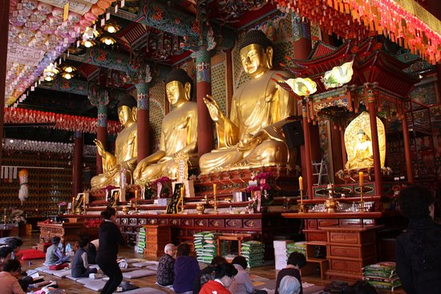
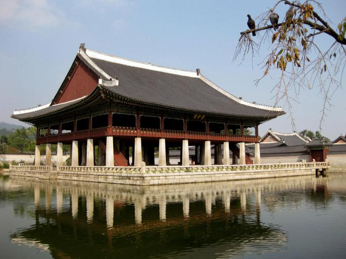

El Templo Jogyesa enclavado en el corazón de Seúl, a diferencia de la mayoría de los templos budistas de Corea, que se encuentran situados en la montaña. El santuario, rodeado de
rascacielos, es un oasis de paz en la bulliciosa capital de Corea del Sur. Es uno de los templos más populares de la ciudad, representativo del budismo coreano y de la orden Jogye.
Este templo es el centro del budismo en Corea del sur, ya que en esta edificación se encuentran ubicadas la oficina principal de administración del budismo y la sala en donde se realiza
la asamblea general, eventos, ceremonias y ritos durante todo el año, además de otras instalaciones. Dentro del edificio se encuentran diversas exposiciones e imprentas, mientras que en
el patio principal del templo se encuentra una pagoda de 7 pisos, donde se conservan enterradas las cenizas del buda creador de este templo. También posee un campanario que contiene una
serie de instrumentos musicales utilizados para las diferentes ceremonias. Al otro lado se encuentra un centro cultural, es allí donde realizan diversos eventos como bodas, conciertos
musicales, exposiciones, entre otros.

Gyeongbokgung es el palacio principal de Seúl y uno de los monumentos nacionales más importantes de la historia de Corea del Sur. Al ser un edificio tan célebre, dispone de su propia parada en el metro de Seúl.
El palacio de Gyeongbokgung es una de las grandes joyas de Corea del Sur, por ser patrimonio histórico y un patrimonio artístico. Está formado por una variedad de edificios, los cuales están rodeados
de jardines y estanques que hacen resaltar su belleza. Es importante resaltar que, sus jardines se comunican con el Museo Folclórico Nacional, el cual se encuentra dividido en tres exposiciones,
donde puedes conocer la Historia del Pueblo Coreano, el Estilo de Vida Coreano y el Ciclo de Vida Coreano. Este imponente complejo fue construido a finales del siglo XIV y desde entonces fue
nombrado el palacio principal la dinastía Joseon. El estado de conservación de los edificios es magnífico y los colores de la madera son tan vivos que no parece que hayan pasado seis siglos desde su construcción.
Otro atractivo del palacio es el cambio de guardia en la entrada principal ubicada al sur del recinto. Los guardias van vestidos a la manera tradicional coreana.